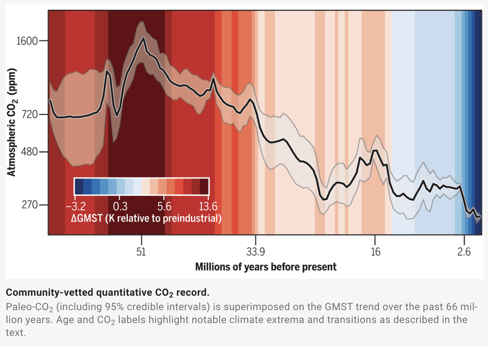
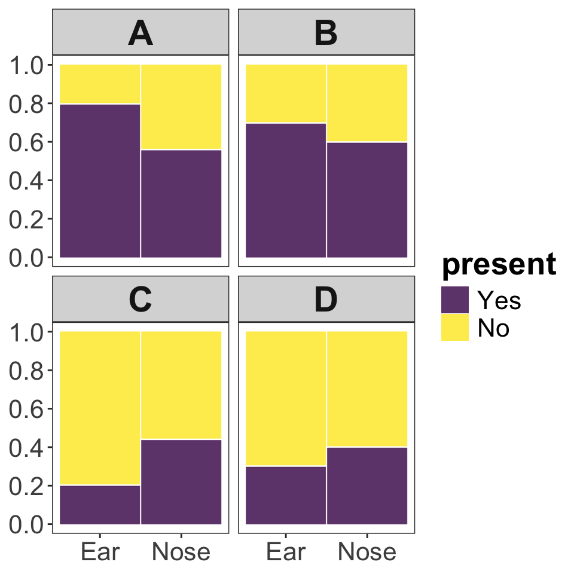
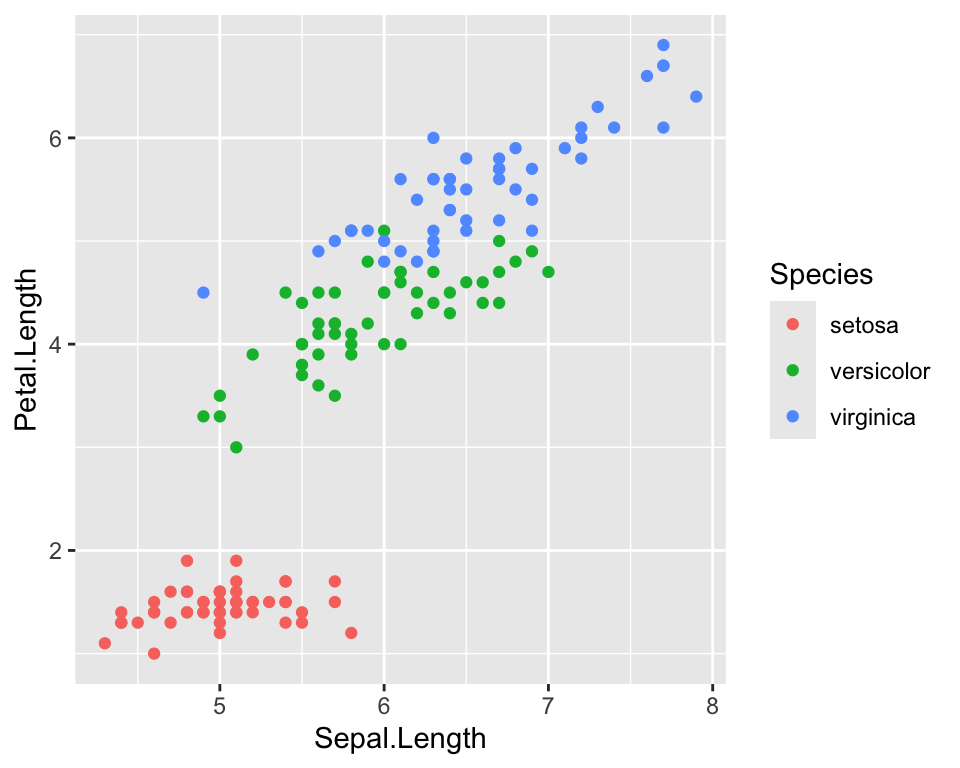

| Yes | No | |
|---|---|---|
| Ear | 40 | 10 |
| Nose | 28 | 22 |
2 Graphics
Due Thursday, Jan 25, 2024 before lecture
Submit your answers via Google Classroom
Fix this graph!
Consider the graphic below from a recent article in Science by the Cenozoic CO2 Proxy Integration Project Consortium. The data visualization attempts to show complex data about the change in atmospheric CO2 and average global temperature over the past approximately 65 million years.

Use the figure above to answer questions 1 & 2.
Hints: on the legend for the color scale, where is 0? Look closely at the tick marks of the axes. What messages do the authors want to communicate about these data; what are the patterns they’re trying to show? Do they achieve their goals?
Identify two instances in which this graphic violates the data visualization rules from Whitlock and Schluter’s textbook. There are multiple possible answers. [2 points]
For each of those two violations, suggest a remedy to improve it. [2 points]
Interpreting figures
Consider a situation in which bacterial swabs were taken from the ears and noses of 50 study subjects, and the number of swabs that showed the presence of Staphylococcus were measured. The table below shows the results of the measurements.
Use the information in the above table to answer question 3.
- Which of the plots shown below (A, B, C, or D) correctly depicts the Staphylococcus swab data? [1 point]

Making graphics
Draw a graph by hand!
Sketch out a histogram (with 5 bins of equal size as appropriate) showing the distribution of the following values:
2, 3, 3, 4, 5, 7, 8, 8, 11, 11, 12, 13, 15, 15, 17, 18, 18, 23, 24, 32, 33, 34, 35, 38, 41, 42, 43, 48You should draw a good, honest, clear histogram BY HAND either on paper or digitally, then submit your graphic by uploading it via the Google Form [2 points].
Now that you’ve suffered through making a graph by hand, isn’t nice to be able to use a computer for this kind of task! Now you’ll fix some ggplot2 code to improve the quality of the below figure:

This is (approximately) the same figure of different iris species used in your textbook and that we used as an example in lecture.
Improve this figure!
Here is the code needed to produce the above visualization of the iris data:
# note: the `iris` dataset is pre-loaded in R, we don't need to read it in
ggplot(iris, aes(Sepal.Length, Petal.Length, color = Species)) +
geom_point()[3 points] Choose two aspects of the iris data plot that you think should be improved. Then starting with the above code, add to it with additional commands to realize the improvements you’d like to make.
To turn in your answer for this question simply paste your final code into the google form. Include comments in your code explaining (briefly) what you chose to improve and why, e.g. (these are not good changes to make):
# 1. Change the colors to rainbow because go bows! # 2. Change the points to diamonds because why not! ggplot(iris, ..... .... .... ....